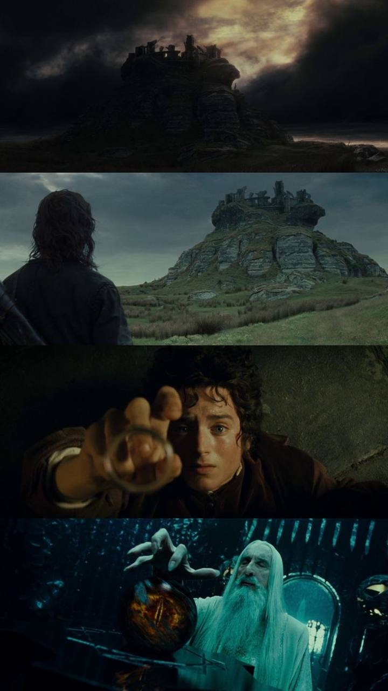

— Хотілося б мені, щоб це сталося в інший час — не в мій. - Фродо
— І мені б теж, та й усім, хто дожив до таких часів. Але обирати не дано.
Ми можемо лише вирішити, як розпорядитись своїм часом. - Гендальф
Як знайти і підібрати нитки колишнього життя, як жити далі, коли в глибині душі починаєш розуміти, що повернення до минувшого немає? Є речі, які не вилікує час, деякі рани йдуть так глибоко, що не загояться ніколи. - Фродо
— …Ми ніби в легенді опинилися, містере Фродо, в одній із тих,
яка бере за душу. У ній стільки страхів і небезпек,
часом навіть не хочеться дізнаватися кінець, тому що не віриться,
що все скінчиться добре. Як може все стати, як і раніше,
коли все так погано?! Але наприкінці все минає...
Навіть самий непроглядний морок розсіюється! Настає новий день!
І коли засвітить Сонце, воно світитиме ще яскравіше!
Такі великі легенди врізаються в серце та запам'ятовуються на все життя
навіть якщо ти чув їх дитиною і не розумієш, чому вони врізалися...
Але мені здається, містере Фродо, я розумію. Зрозумів тепер...
Герої цих історій сто разів могли відступити, та не відступили!
Вони боролися! Тому що їм було, на що спертися... - Сем
— На що ми спираємось, Сем? - Фродо
— На те, що у світі є добро, містере Фродо! І за нього варто боротись. - Сем
Саруман вірить, що тільки дуже значна сила здатна опиратися злу. Але тут я з ним не згоден. Насправді це дрібні речі, буденні вчинки звичайного люду стають на заваді пітьмі. Вияви доброти і любові - Гендальф
Багато хто з тих, хто живе, заслуговують на смерть. А інші гинуть, хоча заслуговують на довге життя. Чи ти можеш нагородити їх? Так не поспішай же роздавати смертні вироки. Навіть наймудріші не можуть передбачити все. - Гендальф
Ваші стежки у вас під ногами. Кожен побачить свою в належний час. - Галадріель